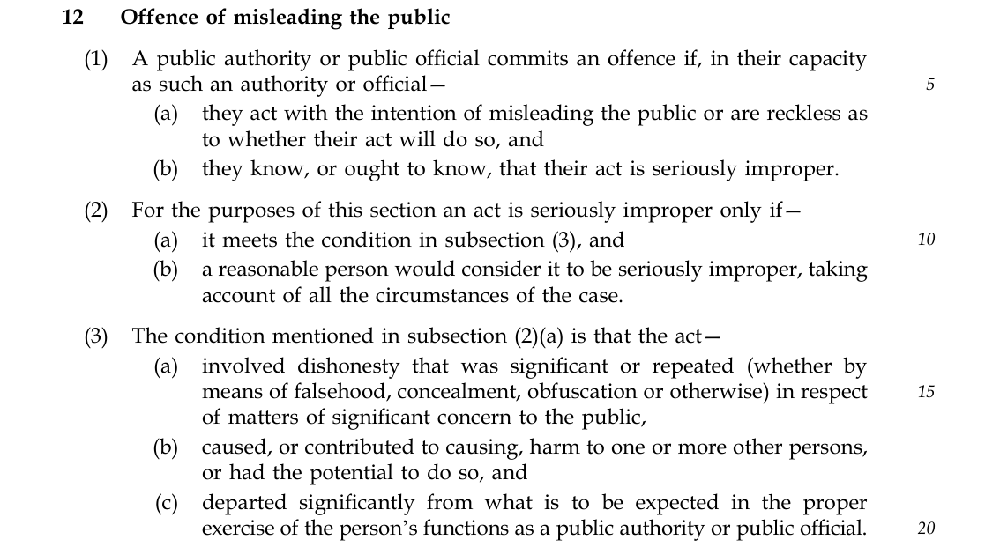
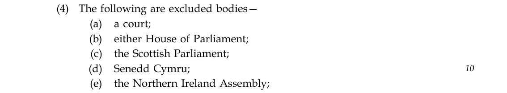
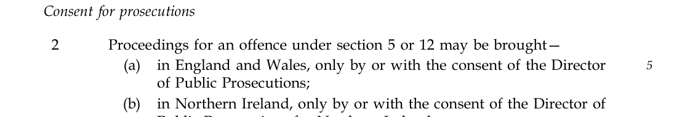

The problem
The Hillsborough Law is an excellent and vital proposal. We wholeheartedly support it, and it must become law. However, the Bill excludes legislators, and the offence of misleading the public, as currently worded, will not work in court.
ExecProsec is uniquely placed to understand these problems. We are the only organisation to have prosecuted a politician for lying under the similar common law offence of misconduct in public office, having prosecuted Boris Johnson in 2019 in his capacities as a Member of Parliament and Mayor of London. That experience showed us how the requirements concerning official capacity and the exercise of functions can prevent an offence from working in court when they are not defined in statute. The same confusion and complexity marred the reception of our prosecution against Johnson.
There is extensive case law on these issues, but requiring judges to work through so much of it is itself part of the problem. The statute must resolve these questions expressly. Legislators must also be included, with protection for parliamentary proceedings stated clearly on the face of the Bill, so that they know they cannot be prosecuted for what they say in those proceedings.

The solution
We must amend the Public Office (Accountability) Bill to include all legislators for their acts in public outside of parliamentary proceedings and ensure that the offence of misleading the public works in court. Our proposed amendments apply the lessons of our 2019 Boris Johnson prosecution: they expressly include legislators, define the requirements concerning “capacity as such” and “functions”, and protect proceedings in all four of the UK’s Parliaments.
Amendment one of two
Schedule 2, paragraph 3, after sub-paragraph (13), insert—
(14) Subject to sub-paragraph (2), “public official” also includes a member of either House of Parliament, the Scottish Parliament, Senedd Cymru or the Northern Ireland Assembly; but this sub-paragraph causes section 12 (misleading the public) to apply to such a member only as provided by section 12(7A) to (7E).
Member’s explanatory statement: This amendment would include members of the UK’s four legislatures as public officials, so that they owe the duty of candour. A separate amendment to clause 12 sets out the limited circumstances in which the offence of misleading the public applies to them.
Amendment two of two
Clause 12, after subsection (7), insert—
(7A) In this section “legislator” means a member of either House of Parliament, the Scottish Parliament, Senedd Cymru or the Northern Ireland Assembly, and this section applies to a legislator because of paragraph 3(14) of Schedule 2 only in the circumstances set out in subsection (7C).
(7B) Neither paragraph 3(14) of Schedule 2 nor subsection (7C) causes this section to apply to a legislator in respect of—
(a) anything said or done in the proceedings of any Parliament or legislative assembly in the United Kingdom,
(b) anything said solely to their own political party about its internal business, or solely about their private or family life,
(c) an opinion, a broken promise, a mistake or anything else in ordinary political debate, unless it is proved that they acted with the intention of misleading the public or were reckless as to whether their act would do so; and an opinion is not dishonest merely because it is mistaken, unpopular or disputed,
(d) withholding information for the purpose of safeguarding national security, but not making any false or misleading statement, or
(e) any act they promptly and publicly corrected, as prominently as they made it, before it could affect any vote, decision or other outcome (for example, before a war has begun or a referendum has been held).
(7C) A Minister of the Crown or of a devolved government, an elected mayor or a legislator who acts with the intention of misleading the public, or is reckless as to whether their act will do so, is treated as acting in their capacity as a public authority or public official and in the exercise of their functions as such, and their act is treated as having had the potential to cause harm to one or more other persons, where they act in order to—
(a) influence whether the United Kingdom goes to war or takes other military action,
(b) influence the result of a referendum held under an enactment,
(c) hide or misrepresent the causes of a disaster or other event involving death or serious injury,
(d) hide a risk to public health or safety, or
(e) hide serious wrongdoing by a public authority or public official, or the misuse of public money.
(7D) Subsection (4) does not apply to an act in the circumstances set out in subsection (7C), and it is irrelevant whether the legislator, Minister or mayor was writing, broadcasting or working for a news publisher at the time.
(7E) Where a person is convicted of an offence under this section for an act to which this section applies to them only because they are a legislator—
(a) if, when sentenced, they are still a legislator, the court may impose a fine but not a sentence of imprisonment, and the conviction does not of itself end their membership, which is a matter for the Parliament or assembly concerned and, where its members are elected, for the voters, and
(b) if, when sentenced, they are no longer a legislator, the court may impose any sentence available under subsection (5).
Member’s explanatory statement: This amendment works with the amendment to Schedule 2 which expressly includes legislators as public officials. It limits liability arising from that status to five specified purposes, protects proceedings, and provides a fine-only sentence while the person remains a legislator. Existing liability as a Minister is preserved.
Download both amendments as a PDF
Every objection answered
What the Government says
“Parliamentary privilege applies to what is said in the House and this is a long-standing constitutional principle to protect debate.”
Rt Hon Nick Thomas-Symonds MP, Minister for the Cabinet OfficeLetter, 20 January 2026 (reference MC2025/20352)
Protected parliamentary proceedings remain protected. Article 9 of the Bill of Rights protects Westminster proceedings, while our proposed amendment expressly excludes proceedings in all four UK legislatures from the new extension of clause 12. The proposal concerns conduct outside those proceedings, including acts on television, the radio, social media and at public events.
The amendment also extends a specific form of immunity from these offences to proceedings in the devolved legislatures in Wales, Scotland and Northern Ireland. Those legislatures do not have parliamentary privilege; they have limited protection against claims of slander. We are therefore extending protection for the purposes of these offences to those Parliaments, rather than limiting or damaging parliamentary privilege, so that legislators remain free to debate.
Basis: Bill of Rights Article 9; our proposed amendment; Chaytor.
What the Government says
“Parliament has its own arrangements for ensuring accuracy and truthfulness in proceedings, including processes for determining whether MPs have misled the other place, and it is for the House of Lords Procedure and Privileges Committee to consider any instances where a Member of your Lordships’ House is alleged to have misled the House.”
Baroness Levitt, Parliamentary Under-Secretary of State, Ministry of JusticeHouse of Lords, 26 February 2026
What the Government says
“While Back-Bench MPs are not included in the new offence, as they are responsible for scrutinising the decisions of the Government of the day, Parliament does already have processes for determining whether Members have misled the House and has its own arrangements for ensuring truthfulness and accuracy from Members. However, I would be keen to work with my hon. Friend to look at how we strengthen matters in relation to his concerns.”
Catherine Atkinson MP, Parliamentary Under-Secretary of State for JusticeHouse of Commons, Report stage, 14 July 2026
Parliament does not regulate lying outside its proceedings. It should continue to regulate its own proceedings and discipline its members, but that does not settle criminal responsibility for serious dishonesty directed at the public outside those proceedings. Standards rules and criminal law can overlap.
Basis: Bill Schedule 4 paragraphs 6 to 9; Chaytor.
What the Government says
“It applies to public officials and public authorities, so it captures those working in government and the wider public sector who take decisions on behalf of the state. That includes Ministers and other politicians in executive roles, but not MPs and Peers.”
Baroness Levitt, Parliamentary Under-Secretary of State, Ministry of JusticeHouse of Lords, 26 February 2026
Ministers are covered through their ministerial functions. Legislative membership is a separate basis of responsibility, and the Bill does not expressly include legislators in Schedule 2. Covering Ministers while excluding backbenchers and the opposition would create a system in which the government of the day is held accountable under these offences for its conduct outside Parliament, while those opposing and scrutinising it are not.
Such a system would unbalance our democracy. It would encourage the public to believe the government and distrust the opposition, damaging the parliamentary relationship between government and opposition that our country has long valued. The public would have a statutory reason to trust the government, but no equivalent reason to trust the opposition. This could be seriously abused: Ministers could appear on television and tell the public to listen only to them because they alone have a legal obligation to tell the truth.
Basis: Bill Schedule 2 paragraphs 2 and 3; our proposed amendment.
What the Government says
“Paragraph (2)(4) sets out that there are express reservations for the courts, Parliament and the devolved legislatures, reflecting long-standing constitutional conventions of self-regulation and independence.”
Alex Davies-Jones MP, Parliamentary Under-Secretary of State for JusticeHouse of Commons, Public Bill Committee, 2 December 2025
The Government's position is that legislative membership alone does not bring a person within these Part 2 provisions. Schedule 2 excludes the legislatures as public authorities, but separately covers holders of a relevant public office. There is an arguable interpretation that this definition already includes members of the House of Lords unintentionally, because of a drafting mistake. Peers should be included expressly and deliberately, rather than by accident. Express inclusion would resolve the uncertainty without leaving a central question of accountability to litigation.

Basis: Bill Schedule 2 paragraphs 2(4), 3(1)(c) and 3(3) to (6); Lords Library briefing on exclusion.
What the Government says
“The Government thought very carefully about who the offence should apply to, but Parliament has a unique role in the system. Noble Lords and Members of Parliament are responsible for scrutinising and improving legislation and holding the Government accountable. Back-Benchers do not take decisions on behalf of the state, nor do they have access to the kind of information that would be available to Ministers. We therefore take the view that it is not appropriate to extend the offence to Back-Bench parliamentarians.”
Lord Lemos, Parliamentary Under-Secretary of State, Ministry of JusticeHouse of Lords, Committee, 12 October 2026
Backbenchers scrutinise government, vote on laws and public spending budgets, and influence decisions of national importance. Their roles give them access to information, people, powers and resources that the public do not have. When they speak about those resources and relationships, the public must be able to trust them to tell the truth. Most are elected by the public and entrusted to report back on what the government is doing. They should not be permitted to lie to the public when doing so.
Under the UK's system of government, executive power is nothing without scrutiny from the opposition and backbenches. The system depends on that balance. Holding only one side accountable under criminal law would be profoundly unjust and would undermine it.
Basis: Bill clauses 2 and 12; proposed amendments.
What the Government says
“This is because individual MPs do not directly take decisions on behalf of the state, nor do they have access to the kind of government information that will be available to Ministers.”
Rt Hon Nick Thomas-Symonds MP, Minister for the Cabinet OfficeLetter, January 2026 (reference MC2026/00453)
The Government and the Cabinet Office repeatedly advance this argument, but it is deeply flawed. Access to secret information is not necessary to make a knowingly dishonest public claim. A person needs no privileged information to deceive intentionally or recklessly: lying can consist simply of inventing information with no basis in reality. Someone who lacks moral character and faces no criminal penalty may feel free to fabricate a claim and present it to the public. That is precisely why lying is so easy and so destructive. On top of this, legislators speak to the public via television, radio, social media, and at events nearly every week of the year. They may not have the information that ministers have, but they certainly communicate with the public.
Basis: Bill clause 12 and our proposed amendment.
Peers make and scrutinise laws, hold Ministers to account, and frequently speak and campaign outside Parliament, including on television, radio and in the press. They are regarded as leaders and elders of our society and carry immense power and prestige within our democracy. When they speak, people listen. They should therefore be held accountable like every other legislator covered by this amendment. Being unelected by the public should not give them the freedom to lie to the public.
Basis: Our proposed amendment.
The courts, judges and juries that have determined questions of dishonesty for centuries would continue to do so. The Director of Public Prosecutions would also be required to consent to a prosecution under this offence. Courts determine criminal liability on the evidence, applying the criminal standard of proof. Political disagreement is insufficient. The prosecution must establish intentional or reckless deceit, significant or repeated dishonesty on a matter of significant public concern, and serious impropriety.
Basis: Bill clause 12 and our proposed amendment.
What the Government says
“Of course, this government agrees that misleading the public in any capacity is not acceptable, and there should be consequences if they do so. But this offence is not the appropriate vehicle for regulating political speech.”
Rt Hon Nick Thomas-Symonds MP, Minister for the Cabinet OfficeLetter, January 2026 (reference MC2026/00453)
We urge everyone considering this legislation to be precise about what they mean by “political speech”. This proposal seeks to criminalise intentional or reckless deceit on matters of significant public importance. The Bill already recognises, and parliamentary debate has made clear, that lying to cover up a disaster or the causes of deaths, or lying about police crime levels, can warrant criminal prosecution. Our argument is that lying to justify an aggressive war, manipulate a referendum result or secure profitable government contracts during a national disaster belongs in the same category of false and deceitful communication.
Ordinary political speech is entirely different and would not be prosecutable under these offences. Honestly held opinions, debate, mistakes and broken promises are normal features of political communication. They are distinct from intentional or reckless deceit designed to cause, or recklessly risk causing, damage to the country on the greatest possible scale. However controversial or unpopular an opinion may be, it would enter the realm of criminal prosecution only if it were intentionally or recklessly deceitful on a matter of significant public concern.
This objection is regularly raised by people who have not read the Bill. The Bill and our proposed amendments make clear that an opinion is not dishonest merely because it is mistaken, unpopular or disputed. A genuine error is not criminal and is not prosecutable.
Basis: Bill clause 12 and our proposed amendment.
No. A broken promise that was honestly intended to be kept is not the same thing as a lie. A promise honestly made and later broken is not prosecutable. Evidence that a promise was knowingly false when made could support a prosecution if it were strong enough to establish an intentional or reckless attempt to deceive the public. Every element of the offence would still have to be proved.
Basis: Bill clause 12 and our proposed amendment.
What the Government says
“This offence is designed to capture the most serious incidents of misleading the public — behaviour like that seen after Hillsborough where officials and public servants intentionally spread a false narrative to protect their reputation, causing harm as a result. It is intended to deter and punish state cover-ups.”
Rt Hon Nick Thomas-Symonds MP, Minister for the Cabinet OfficeLetter, January 2026 (reference MC2026/00453)
This is incorrect, as the wording of the Bill makes clear. Clause 12 is not confined to disasters or cover-ups. Nothing in the Bill states that the offence applies only to Hillsborough-style events. Its wording can cover other seriously improper public deception by the authorities and officials within its scope.
Basis: Bill clause 12 and our proposed amendment.
We agree that the requirements concerning “capacity as such” and “functions” are undefined in the offence of misleading the public. This is a major problem, which our amendment seeks to resolve. The new offences also contain several evaluative tests that juries would rightly determine. Given that a central purpose of the Bill is to criminalise harm to the public by public officials and authorities, it is right that juries should represent the public interest in making those decisions.
Basis: Bill clause 12 and our proposed amendment.
Section 106 of the Representation of the People Act 1983 already addresses certain false factual statements about a candidate's personal character or conduct. The new offence of misleading the public serves a more important and long-awaited purpose. It criminalises intentional or reckless deceit on far more serious matters, including dishonest claims about public spending, concealment of the causes of deaths, the justification for war, manipulation of a referendum, and other issues of national importance.
Basis: Representation of the People Act 1983 section 106; proposed amendments.
What the Government says
“We are also confident that the courts would not construe the two misconduct in public office offences or the misleading the public offence in this Bill as sitting aside from the Article IX protections against proceedings in Parliament, including what Members say or do in Parliament. The Bill would need to make express provisions to set aside this constitutional principle, which it does not.”
Baroness Anderson of Stoke-on-Trent, Deputy Chief Whip, for the GovernmentHouse of Lords, Committee (3rd Day), 21 October 2026
The Government, through Baroness Anderson in the House of Lords, has already acknowledged that these offences cannot be used against anything said or done in parliamentary proceedings.
The offences do not apply to ordinary political debate. They apply only to intentionally or recklessly deceitful statements on matters of significant public concern.
A prosecution cannot proceed or obtain the DPP's consent without evidence establishing that the accused intentionally or recklessly deceived the public.
Good candidates would be encouraged rather than deterred, because our democracy would become an environment in which honesty is welcomed and rewarded, while deceit is not. Over time, we expect politicians' conduct and public trust in them to improve considerably. This would make a career in democratic politics more appealing to candidates of a higher calibre.
Basis: Bill clause 12 and our proposed amendment.
We must be precise about what we mean by “politically motivated prosecutions”. A prosecution requires the consent of the Director of Public Prosecutions and evidence that the accused intentionally or recklessly deceived the public on a matter of significant public concern. If those requirements are met, the case can and should proceed to trial.
Whatever the accused's political party, their supporters will inevitably claim that the prosecution is politically motivated. It is an easy and inexpensive way to distract attention from the merits of the case. The credibility of the evidence matters far more than the motivation attributed to the prosecution and this is recognised in precedent. The debate should concern whether that evidence stands up and whether the elements of the offence are met. The accused's political party or affiliation should be legally and evidentially irrelevant: everyone must be treated equally under criminal law.
The Bill requires proceedings in England and Wales to be brought by, or with the consent of, the Director of Public Prosecutions, and proceedings in Northern Ireland by, or with the consent of, its Director. Scotland has a separate prosecution system. These controls provide substantial safeguards, including for private prosecutions.

Basis: Bill Schedule 3 paragraph 2.
The Attorney General is appointed by the Prime Minister. Giving the Attorney General a veto would therefore allow the Prime Minister and their party to prevent prosecutions of themselves and their colleagues. It would unbalance the offence by enabling the government to protect its own members while allowing prosecutions of the opposition. Such an amendment would be extremely dangerous: it would undermine equality under the law and allow the government to weaponise it.
The Director of Public Prosecutions, who leads the Crown Prosecution Service, faces some similar pressures, but the post is not a political appointment. The DPP is not required to be a member of the accused's party and has a very different legal status. We acknowledge that the DPP is not wholly independent of the government: a DPP could be removed if the government disliked a decision. The position is therefore imperfect, but it is vastly preferable to giving this power to a politically appointed, party-political Attorney General.
Basis: Bill Schedule 3 paragraph 2; campaign position.
Some complaints may be unfounded or politically motivated. Police and prosecutors would need to assess the evidence against the actual offence, rather than treat every disputed claim as criminal. Clear scope, published guidance and prompt screening are important. We cannot reliably predict complaint numbers or promise that the law will eliminate dishonest campaigning. We can, however, amend the Bill as proposed to make clear to everyone what falls within its scope and what does not.
Basis: Bill clause 12 and our proposed amendment.
Being subject to police investigation is a reality that everyone else must accept, and under this Bill nearly every public official would face it too. Legislative status should not exempt someone from the ordinary procedures of justice. The answer is proportionate investigation, clear legal thresholds and the safeguards in our proposed amendment. Concern about investigation does not justify automatically exempting legislators from accountability that applies to other public officials.
The best way for politicians to avoid investigation is to ensure that their public statements reflect what they believe and that they have evidence to support their arguments. This is already a professional reality for the vast majority of other professionals, who would face the Fraud Act if they acted otherwise. The days when politicians could appear on television and say whatever they liked simply to provoke a public reaction are over. A new standard of professionalism, accuracy and honesty is coming into force as part of the modernisation our democracy requires.
Basis: Bill Schedule 3 paragraph 2; proposed safeguards.
That danger would arise if the Attorney General were given the power to approve or block prosecutions, as other amendments have proposed. As explained above, we are wholly opposed to that suggestion. No criminal law is immune from abuse, but the separation of powers exists for a reason. The judiciary, legislature and executive are separate, and judges are not required to follow the government's instructions in court. The Bill is sufficiently defined to require cases to meet the criminal standard of evidence before they can proceed.
Basis: Proposed amendments; Bill Schedule 3 paragraph 2; campaign position.
What the Government says
“Ultimately, elected members are accountable to the public.”
Rt Hon Nick Thomas-Symonds MP, Minister for the Cabinet OfficeLetter, 20 January 2026 (reference MC2025/20352)
Elections and criminal prosecutions determine different things. Elections decide who holds office and can reflect the popularity of a party, its leader or its policies. A criminal prosecution determines whether an individual has abused their office or the public while holding power. Establishing guilt requires a jury and a court to examine the evidence carefully at trial. Elections cannot provide that level of detailed analysis or sustained scrutiny.
Election to public office should not place anyone above criminal law. Legislators are proposing to criminalise misleading the public for nearly all other public officials while excluding themselves. To place the lawmakers above their own law would be deeply hypocritical, contrary to equality under the law and an abuse of the justice system.
The parliamentary expenses scandal illustrates the point. Elected politicians went to prison for false expense claims. Their status as elected representatives did not exempt conduct contrary to the public interest from investigation, prosecution and trial. They faced justice, as everyone should. Peers do not face the ballot box at all. That cannot mean they should be above criminal law either.
We nevertheless recognise concerns that these offences could be used to remove serving politicians from power. For that reason, we have explored an amendment under which a legislator holding office at the time of conviction would not automatically lose that office. They would still face a criminal fine.
Basis: Chaytor; our proposed amendment.
Judges do not determine guilt; juries do. Juries consist of members of the public who represent the public interest in these cases. Courts would apply a criminal test to intentionally or recklessly deceitful acts that caused significant public harm. They would not decide which policies were desirable or undesirable.
This is not a credible concern. The number of politicians who intentionally or recklessly deceive the public on matters involving sufficiently serious public harm is minuscule compared with the number who perform their roles largely honestly and directly.
Even in our 2019 prosecution of Boris Johnson, where there was abundant video evidence, it took more than two years to assemble and analyse that evidence and recruit the legal team needed to bring the case to court. Proving that a politician intentionally lied to the public on a sufficiently important matter is extremely difficult, even in a rare case with extensive evidence.
We do not expect many cases against politicians to reach court. Indeed, we consider it possible that, once the Bill becomes law, dishonest conduct will fall so sharply that politicians will no longer be so readily associated with the word “liars”.
Basis: Bill clause 12 and our proposed amendment.
The “disease” has already produced a war justified by dishonest claims, at least one referendum whose outcome was changed by a deceitful claim, and numerous other disasters that harmed the public, cost lives and destroyed trust in Parliament and democracy.
The proposed “cure” is to criminalise this conduct with the aim of reducing it substantially. Having read the Bill carefully, we do not see how that could be worse than the dishonesty democracy has faced as long as it has existed.
Basis: Proposed amendments; campaign position.
If those covered by the offence of misleading the public, including Ministers, repeatedly lie during an election, and the evidence establishes intentional or reckless deceit meeting the elements of the offence, it is right that they should face a jury.
However, when Parliament is dissolved for a general election, elected MPs lose their status as legislators. Those who seek re-election become candidates. Ministers retain their ministerial status during elections. As the Bill stands, Ministers could therefore be prosecuted for their election-period statements, while other candidates would not qualify as public officials, even if legislators were added to the Bill.
We believe all public officials should be liable to prosecution for lying during election periods. Election lies are extremely dangerous to trust in democracy and can bring governments to power that would not have won office had they told the truth. We therefore propose that general election candidates should also have the status of public officials. They perform a public function by participating in the voting process and the democratic route to power.
Without that inclusion, among these candidates only serving Ministers, and therefore the government of the day, would be liable to prosecution for lying during an election. This question of balance and equality under the law has not been properly addressed. We hope Parliament will vote to include candidates within these offences as well.
Basis: Bill Schedule 2 paragraph 3(13); our proposed amendment; earlier campaign candidate draft.
What the Government says
“We are replacing the old common-law offence because there was a lack of certainty about it. One of the issues with it was the lack of a list of those to whom the law applied. To deal with that, those two new offences do have a list. Both those two very broad offences do apply to MPs and Peers, as well as to a number of other public office holders, including judges.”
Baroness Levitt, Parliamentary Under-Secretary of State, Ministry of JusticeHouse of Lords, 26 February 2026
We agree that MPs can be prosecuted for lying under the common law offence of misconduct in public office. That was the basis of our 2019 prosecution of Boris Johnson. However, that offence is being abolished and will no longer be available once the Public Office (Accountability) Bill becomes law.
The Bill would replace the common law offences in England and Wales and Northern Ireland with statutory offences that expressly include legislators. Clause 12 separately addresses seriously improper misleading of the public. There may be overlap, but the misconduct provisions do not make the proposed extension of clause 12 redundant.
Basis: Bill clauses 12 to 18 and Schedule 4.
What the Government says
“The Government are confident that the scope of the new offence, combined with the existing arrangements and the codes of conduct for parliamentarians, strike the right balance between capturing the most serious wrongdoing while not infringing the tried and tested procedures that govern all noble Lords and all those in the other place to ensure that we conduct ourselves to the highest standards.”
Baroness Levitt, Parliamentary Under-Secretary of State, Ministry of JusticeHouse of Lords, 26 February 2026
Codes of conduct and the Nolan principles are valuable and informed our 2019 prosecution of Johnson. They can help establish the “acting as such” element and abuse of public trust under the common law offence of misconduct in public office, and could also be useful under the Bill's new offences. However, their role is supporting: they do not themselves create criminal offences. They should remain in place, but they do not serve the same purpose as criminal law.
Basis: Bill clauses 10 to 12; campaign position.
This claim is false. Reports circulated widely on social media that Wales already had a law against lying to the public. The Senedd Cymru (Member Accountability and Elections) Act 2026 instead proposes that an offence of politicians lying to the public should be introduced in the future. Such an offence has not yet been created, and we are not aware of any deadline for its introduction.
The offence of misleading the public will apply throughout the UK and will become law before the Welsh version is created. It is possible that plans for a separate Welsh offence will be abandoned because the offence of misleading the public will make it unnecessary.
In the UK, it is generally considered unfair to criminalise conduct that was not criminal when it occurred. This proposal therefore does not seek retrospective criminal liability. The new offences would apply to events going forward in time only.
Basis: Bill clause 27 and clauses 17 to 18; European Convention on Human Rights Article 7.
The Bill is carefully worded to allow intelligence officers, police and the armed forces to deceive where that is justified as part of their official functions. Clause 12 already provides a defence for necessary intelligence-service functions or the armed forces on active service, alongside a separate reasonable-excuse defence.
Basis: Bill clause 12(6) to (7); our proposed amendment.
Clause 12 exempts qualifying journalistic acts by recognised news publishers and those working for them. Journalists are not public officials or public authorities. Although we believe they should face similar offences in the future, that is a separate campaign. Our immediate priority is to hold public officials and authorities in government accountable. Attempting to take on two such major parts of society at once would be doomed to fail.
However, politicians frequently work as journalists on television, radio and in newspapers. Their journalistic role should not exempt them from prosecution for conduct undertaken while holding political office. Under our proposal, their political status would take precedence, so they could not avoid prosecution for lying on a news programme or in a newspaper article simply by claiming to be acting as journalists. Such an exemption would be unjust.
Basis: Bill clause 12(4); our proposed amendment.
What the Government says
“we have come to the conclusion that it would not be appropriate to extend the offences in the Bill to all MPs and Peers—and they are not extended to judges either.”
Baroness Levitt, Parliamentary Under-Secretary of State, Ministry of JusticeHouse of Lords, 26 February 2026
We believe all members of the judiciary should be covered by both the offence of misleading the public and the duty of candour. However, our campaign has shown that parliamentarians are already struggling with the inclusion of legislators. People are so afraid of judges that the prospect of holding them accountable is more daunting still. Although judges should be included, we believe concentrating on legislators is vastly more likely to succeed.
The offence of misleading the public applies only to intentionally or recklessly deceitful acts. An official who makes a mistake during an emergency and says something they honestly believe to be correct cannot be prosecuted on that basis. An honestly made assessment does not become criminal because it turns out to be wrong. The prosecution must still establish every element of the offence, and the Bill provides a reasonable-excuse defence.
Basis: Bill clause 12(1) and (6) to (7); earlier campaign safeguards draft.
We agree that the name “misleading the public” is itself misleading, because the offence does not criminalise misleading behaviour generally. It criminalises only intentionally or recklessly deceitful acts. We raised this concern when we met the Government and suggested names that would describe the prohibited conduct more accurately.
Our priority, however, is to ensure that the offence works in court and applies to legislators. Renaming it is less valuable to the public than ensuring that it serves them effectively.
Basis: Bill clause 12; earlier campaign renaming proposals.
We agree that legislators would not voluntarily vote to include themselves. That is why we are campaigning to humiliate them nationally and make clear that the press and public are watching the forthcoming votes closely.
Legislators across the UK will face decades of public humiliation and hatred if they exempt themselves from their own law against lying to the public while requiring nearly everyone else in public life to obey it. Our strategy is to give them a foretaste, before they vote, of that humiliation and the damage to public trust they would face.
Our campaign has already achieved a great deal and has substantial support within Parliament. We are confident that with enough funding we will be able to do everything possible to secure the right decision, but we cannot guarantee it. At the time of writing, we were not receiving enough funding at all to achieve our objectives, but we are at least starting to raise more. What we can do is make clear how deeply the public will despise them if they choose to exclude themselves.
Basis: Campaign record; campaign request.
The amendment to include legislators is voted on separately from the Bill itself. If legislators reject their own inclusion, the amendment falls, but the Bill remains intact and can still be passed. Parliament can equally choose to include legislators and then pass the Bill. Nothing prevents it from doing both.
The Hillsborough Law is one of the most beautiful and vital laws in the history of our democracy. It must become law, and we agree that it must be protected. However, if it passes while excluding legislators, the damage to public trust in Parliament and our legislators will be catastrophic. The UK deserves both victories.
Basis: Parliamentary Bill and amendment process; campaign position.
These offences would apply to nearly all public officials and, if our amendments pass, all legislators, regardless of political party. Their application depends on office and conduct, not party affiliation. There must be equality under the law.
We agree that the police and Crown Prosecution Service will use this offence very rarely. Doing so would mean investigating and potentially prosecuting politicians and Ministers who are their bosses, placing enormous pressure on individual officers and prosecutors. Nevertheless, we believe they would act in the most serious and best-evidenced cases.
We expect very few cases, perhaps one or two every two or three years. In our view, the vast majority would have to be brought by private prosecutors funded through public crowdfunding. At ExecProsec, we are building the institution the country needs to undertake this work professionally. We will pursue criminal prosecutions of the most powerful people in society, funded by the public, in cases where the police and CPS are too conflicted to act.